HORT 281 :: Lecture 18 :: ORIGIN, AREA, PRODUCTION, VARIETIES, PACKAGE OF PRACTICES FOR FRENCH BEANS

Origin, area, production, varieties, package of practices for FRENCH BEANS
(Syn: Snap bean, String bean, Kidney bean, Haricot bean, Fresh bean)
(Phaseolus vulgaris L.) (2n = 22)
(Hindi: Vilaiti sem)
French bean is an important cool season legume vegetable grown for its tender pods, shelled green beans and dry beans (Rajmah beans). In western countries, processed pod consumption is quite high. 100 g of green pods contain 1.7g protein, 4.5 g carbohydrates, 221 I.U. vitamin - A, 11 mg vitamin-C, 50 mg calcium etc. Dry beans are rich in protein.
Origin and Taxonomy
Genus Phaseolus originated in New World. Following four species are under cultivation in New World:
- Phaseolus vulgaris – French bean
- P. coccineus – Runner or Scarlet bean
- P. lunatus – Lima bean, Butter bean or Madagascar bean
- P. acutifolius var. latifolius – Tapery bean
All the given species are diploids with 2n=22 and self-pollinated except P. coccineus, which is cross-pollinated. French bean, the most important species under Phaseolus, is originated in central and South America (Kaplen, 1981)
.P.vulgaris Phaseolus coccineus
| 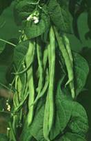 | 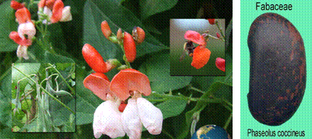 |
| 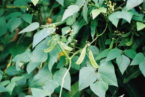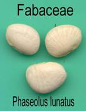 | |
| 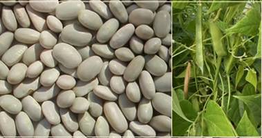 |
White Tepary Beans |
Botany
French bean has tap root system with poor nodule formation. Leaves are trifoliate. Though a self-pollinated crop, French bean offers wide variability for plant growth (bushy / climbing), colour of pod (green / waxy coloured), cross section of pod (flat / oval / round), pliability (stringed / string less) etc.
| 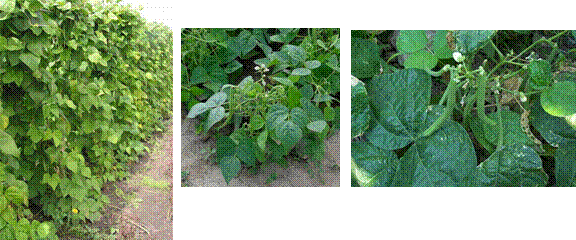 |
| 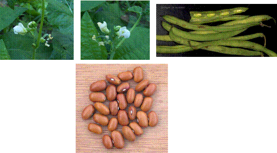 |
Varieties
There are specific varieties for snap bean purpose, dry bean purpose and for processing. Processing varieties are very popular in the USA. A brief description of improved varieties is given below:
Developing institution |
Variety |
Special features |
IIHR, Bangalore. |
Arka Komal* |
Introduced bushy variety from Afghanistan. Pods straight, flat, and green with large brown seeds. Good transport and keeping quality. Yield 19 t/ha and 3 t/ha seed in 65-70 days. |
|
Arka Subidha* (IIHR 909) |
Plants bushy and photosensitive. Pods straight and oval, light green, stringless and fleshy. Yield 19 t/ha in 70 days. |
IARI Regional Station, Katrain |
Contender |
Plants bushy with pink flowers. Pods green, round long and stringless. Tolerant to mosaic and powdery mildew. Yield 20 t/ha. |
|
Pusa Parvati |
Developed through irradiation followed by selection from wax podded variety EC 1906. Plants bushy with pink flowers. Pod green, round long. Resistant to mosaic and powdery mildew. Yield 22-25 t/ha. |
|
Pusa Himalatha |
Pole variety with medium sized (14 cm long) round, meaty, stringless pods with an average yield of 26 t/ha. |
VPKAS, Almora |
VL Boni 1* |
Dwarf variety with white flowers. Pods round, light green, stringless and fleshy. First harvest 45-60 DAS. Yield 10-11 t/ha. |
Tamil Nadu Agricultural University |
Ooty-1 |
Moderately resistant to leaf spot, anthracnose and pod borer. Yield 10-11 t/ha. |
|
TKD1 |
A pole type suitable for growing in hills. Pods long, flat with low fibre. Yield 5-6 t/ha in 90-100 days. |
|
KKL 1 Moringa bean |
A pole type suitable for growing in hills. Pods long (28 cm) with low fibre. Seeds white and flat. Yield 7 t of pods and 3 t. of grains/ha. |
|
YCD1 |
Bushy dual purpose variety suitable for kharif season. Pods slightly flat, 15 cm long. Seeds dark purple. Tolerant to root rot, rust, yellow mosaic and anthracnose. Yield 9.75 t. of pods or 6.3 of grains / ha in 105 days. |
NDAU&T, |
NDVP 8* |
Mid season variety with 10 t/ha |
|
NDVP 10* |
Mid season variety with 10 t/ha. |
CBPUA&T, Pantnagar |
Pant Anupama* (UPF 191) |
Plants bushy and dwarf with concentrated fruiting. Moderately resistant to bean mosaic and angular leaf spot. Yield 9 t/ha. |
MPKV, Rahuri |
Phule Surekha |
Pods 9-10 cm long, flat, light green. Tolerant to anthracnose, yellow mosaic and wilt disease. Yield 15 t/ha. |
* Varieties released / identified by AICRP (Vegetables)
In addition to the above improved varieties, cultivars like Kentucky Wonder (pole type with long, flat and stringless pods), Premier, Giant Stringless, Bountiful etc. are also very popular among farmers.
Climate
French bean is a day neutral cool season vegetable and tolerates high temperature better than peas. Optimum monthly temperature for cultivation of French bean is 15-25oC compared to 10-18oC for peas. It is sensitive to high rainfall, frost and high temperature. Pole types tolerate high rainfall better than bushy varieties
Soil
Soil requirements are same as that of pea. Ideal soil pH for growth of French bean is 5.5 – 6.0
Season
In plains of North India, French bean is sown during two seasons viz., July-September and January-February. In hills, sowing is done from March to May.
Land preparation and sowing
Land is ploughed to a fine tilth and divided into plots of convenient size. Ridges and furrows are prepared by ploughing after a basal dose application of farmyard manure. Field is irrigated once and seeds are sown under optimum moisture condition on side of ridges 2-3 days after irrigation. Spacing and seed rate vary with varieties. Early varieties are sown at a spacing of 45-60 cm x 10-15 cm and seed rate required is 80-90 kg / ha. Pole types are sown at 1.0 m apart in hills @ 3-4 plants / hill and seed rate is much less (25-30 kg/ha.).
Manure and fertilizers
French bean responds well to application of lime and fertilizers. In addition to 20-25 t. of farmyard manure, 50 kg N, 75 kg, P2O5 and 75 kg K2O are recommended. Half of N along with full P and K should be applied as basal dose at the time of making ridges and furrows or one or two weeks after germination. Apply remaining dose of N, one month after first application.
Application of fertilizers in Tamil Nadu
Apply FYM 25 t/ha at the last ploughing. N 90 kg and P 125 kg/ha should be applied on one side of the ridges. For rainfed conditions of Shevaroy hills, apply as a basal dose of 62.5 kg/ha of Phosphorous as super phosphate and with another half of 62.5 kg/ha Phosphorous as FYM enriched super phosphate.
Intercultural operations
French bean is a shallow rooted crop and only light inter-cultural operations are practiced. During early stages of crop, weeding followed by fertilizer application and earthing up can be synchronized. A pre-sowing application of Fluchloralin @ 2.1 /ha checks weed growth for 20-25 days.
Water stress influences yield of French bean and crop is most sensitive at flowering and fruiting stages. 6-7 irrigations are required during growing season.
Staking is an important operation for pole types and bamboo sticks or any locally available materials should be erected when plants start vining. Individual vertical stakes and horizontal canes at 40 cm distance are erected for encouraging growth and spread of plants.
Application of plant growth regulators like PCPA (2 ppm) and NAA (5-25 ppm) has favourable effect on fruit set and yield.
Harvesting and yield
Pods are harvested at full grown stage but immature and tender. Pods are ready for harvest 7-12 days after flowering depending on varieties. In bush varieties, 2-3 harvests and in pole types 3-5 harvests are made. Quality of beans varies with harvests and best quality fruits are obtained in initial harvests compared to later harvests. Loss of crispness during storage and in last harvest is attributed to loss of water and increase in water soluble pectin.
Seed weight is a major indicator of green bean harvest maturity. Yield of tender pods varies from 8-10 t/ha in bush varieties and 12-15 t/ha in pole types. Dry beans are harvested when majority of pods are fully ripe and colour turns yellow. Seed yield varies from 1250 to 1500 kg / ha.
Pests and diseases
Crop is affected by pests like stem fly, thrips, mites, bean beetle, bean weevil, aphids etc. Yellow mosaic, anthracnose, powdery mildew, rust, root rot and wilt and leaf spot are common diseases affecting French bean.
LIMA BEAN
(Syn: Double Bean) (Phaseolus lunatus L.) (2n = 22)
(Hindi : Lobia)
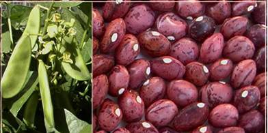
Dixie Speckled Butter Peas - Phaseolus lunatus
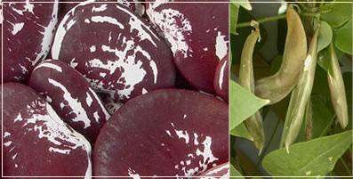
Christmas Lima Beans - Phaseolus lunatus
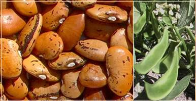
Hopi Yellow Lima Beans - "Sikyahatiko" - Phaseolus lunatus
Lime bean is a cool season vegetable requiring dry and cool climate with an average rainfall of 50-62.5 cm. Compared to other legumes, it is a long duration crop and is retained in field for 9 months. Lima bean is an important crop in Maharashtra.
Cultivation practices
In Maharashtra, crop is grown after sugarcane. After harvest of sugarcane, land is ploughed to fine tilth and seeds are sown in hills @ 2-3 seeds / hill at a distance of 180 x 120 cm during July. Seed rate required is 8-10 kg/ha.
When plants start vining, they are trained to trellis made with vertical bamboo poles with horizontals tied at a distance of 45 cm. Height of trellis is up to 150 cm and they are usually erected along direction of wind.
Lima bean responds well to manuring and fertilizer application. Irrigation and other timely inter-cultural operations required are same as that of other legume vegetables.
Harvesting
Plants start flowering 80-85 days after sowing and pod formation takes place one month alter. First harvest is obtained four months after sowing, i.e., by November and it extends up to March. On an average, 12-14 harvests are possible at an interval of 15-16 days. Yield varies from 8-12 t/ha.
BROAD BEAN
(Vicia faba L.) (2n = 12, 14)
(Hindi: Bakla)
Broad bean, also known as faba bean or horse bean, is the only bean, sown in autumn and is grown as a winter crop in high elevations. It is a hardy plant and withstands low temperature as low as 4oC. The crop is widely cultivated in Latin America and is grown in India in a limited scale in northern states having low temperature. It tolerates salinity to a certain extent. Broad bean is sued as tender bean, green shelled bean, and dry bean and as cattle feed.
Plants are more or less vine like and grow erect without branching to a height of 60-125 cm. Stem is square in cross section and flowers are pollinated by insects. Pods are borne in upright clusters of 5 or more in axils of leaves. Green pods grow parallel to stem. It is about 15 cm long and 2 cm wide with slightly round in cross section with 5 or more beans.
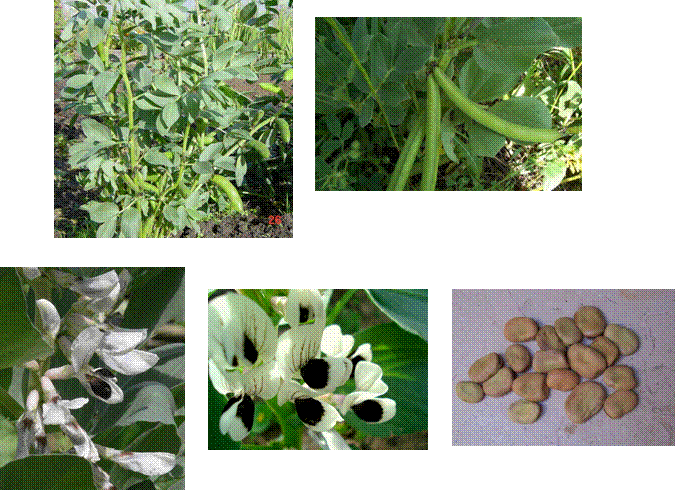
Varieties
Masterpiece White Long Pod, Masterpiece Green Long Pod, Imperial White Windsor and Imperial Green Windsor are some of the introduced varieties. Jawahar Selection 73-31 is an improved selection from Madhya Pradesh. A few selections made at Bihar are BR-1 (black seeded) and BR-2 (yellow seeded). M/s.Suttan Seeds developed a dwarf type ‘Suttan White Seeded’.
Cultivation
Broad bean requires low temperature for its cultivation. Crop is tolerant to water stress due to protein accumulation. It tolerates water-logging and salinity. Seeds @ 70-100 kg/ha are sown in shallow channels spaced at 75 cm. In each channel, seeds are sown in double rows at spacing of 25 cm. Cultivation practices are similar to that of pole type pea. Plants are stacked with wooden sticks.
Tender pods are harvested at green shell stage, 3-4 months after sowing. Under favourable conditions, crop yield is 7-10 t. of green pods and 1-1.2 t. of green beans/ha.
Application of fertilizers in Tamilnadu
Apply 25 of FYM and 50 kg P and 25 kg K/ha as basal dose. 25 kg N and 25 kg of K/ha are applied between 20-25 days after sowing and application of remaining 25 kg of N is done between 40-45 days.
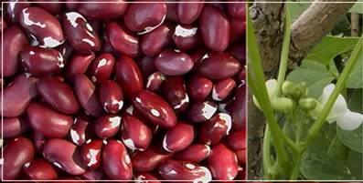
Anasazi Beans(Phaseolus vulgaris)
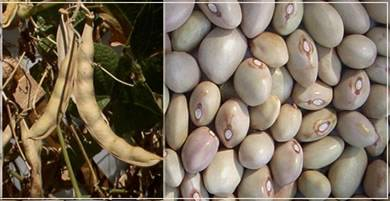
Bolita Beans (Phaseolus vulgaris)
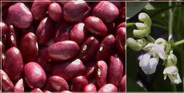
Purple Beans (Phaseolus vulgaris)
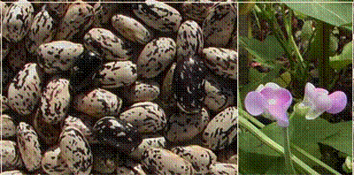
Hopi Black Pinto Beans (Phaseolus vulgaris)
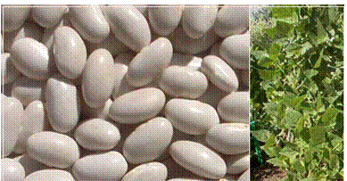
Little White Ice Beans (Phaseolus vulgaris)
********
1. Origin of French bean is _____________.
2. In India, the largest area under temperate leguminous vegetable is _____.
a. Peas b. French bean c. Snap bean d. Butter bean
3. For seed germination the temperature required for lima bean is ________.
4. Origin of broad bean is ___________.
| Download this lecture as PDF here |